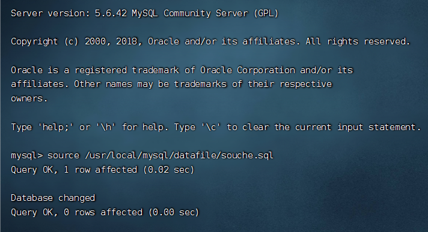

2022年9月27日
招聘
给tomcat配置环境变量
和mysql一样
如何部署网站
问题没有监听8080端口
原因是，JAVA_HOME路径配置错误
错误可以从 tomcat路径下面的 logs/cataline.out 查看 命令用cat命令
查看自己访问的端口号
开启后的8080 是外网访问 8005 是内网 3306 数据库的
步骤就是
把war包放入webapps中，然后启动tomcat 通过端口号加:8080/资源名访问
在linux中如何导入.sql文件
进入mysql中导入
- 首先看看。sql文件的内容中是否有创建数据库和切换数据库的代码
如果有直接就 正常登录然后使用命令
// 执行source命令,可用pwd查询sql文件路径
source /mysql/file.sql
- image-20220927100627617
使用shell命令导入，导出sql文件
source命令，是一行一行执行的，过慢，不适合大数据
导出数据库
直接使用命令：
mysqldump -u root -p abc >abc.sql然后回车输入密码就可以了；
mysqldump -u 数据库链接用户名 -p 目标数据库 > 存储的文件名文件会导出到当前目录下
导入数据库（sql文件）
mysql -u 用户名 -p 数据库名 < 数据库名.sqlmysql -u abc -p abc < abc.sql这里的 数据库名 可以没有，就是上述的 sql文件中有创建数据库和切换数据库的代码
注意sql文件必须在当前目录下，如果不在当前目录下需要在< 之后加上具体sql文件路径
在markdown文件代码块中使用linux的代码，怎么设置
无
mysql安装步骤
创建用户组和用户
解压安装包
设置文件权限（不赋予权限试试）
添加my.cnf配置文件
配置my.cnf文件
添加my.cnf中的使用到的文件夹
安装mysql
添加mysql到开机初始化启动项中
添加到服务中
启动mysql
修改密码
chmod 和 chown 的用法和区别
详解：
- 总的来说只有root用户还有文件的所有者可以该文件的对于自己和其他人的权限
- 为了避免文件执行时不可执行，文件读写时不可读写的问题，需要按需设置文件的权限
安装mysql报错FATAL ERROR: Could not find ./bin/my_print_defaults的解决办法
对mysql数据库初始化过程中，会有如下报错信息：
按照报错信息，去mysql安装目录的bin目下查找是否有_print_defaults，在第一列的第七行有发现这个文件
看来其实不是没有这个文件，不是这个问题。
认真查看报错信息，可注意到那个路径是相对路径，是以mysql的安装目录为起始。
而初始化则是进去初始化脚本目录里运行脚本，而在这个目录下不会有./bin/my_print_defaults的。
所以回到安装目录以相对路径去执行初始化脚本。
OK！初始化成功
2022年9月28日
为什么有的时候tomcat的war包会自动解压，有时候又不会
我试过重新启动tomcat但是依然不行
检查配置文件
- 在conf/server.xml 中

unpackWARs：自动解压
AutoDeploy：服务器不需要重启就可以解压
权限问题，当前用户是否有创建文件夹的权限
- 切换到root用户
总结： 是我传成sql文件了，本来是可以自动解压的。。。。。。。。
打开网页但是显示404
配置文件是
按照配置文件弄好了，我用别的war包可以用，但是这个搜车网的还是不可用
结果： 顾润说是mysql的版本不匹配，比赛时用官方给的，是匹配的，不会出现这种问题，就不纠结了
linux 如何查看当前ip地址
vb启动虚拟机报错
把网卡改成上 面一样，高级的可以不弄
虚拟机没有IP地址
发现ens33 没有inet 这个属性，那么就没法通过IP地址连接虚拟机
接着来查看ens33网卡的配置：vi /etc/sysconfig/network-scripts/ifcfg-ens33 注意vi后面加空格
vi是Linux内置的文本编辑器命令 打开文件的意思从配置清单中可以发现 CentOS 7 默认是不启动网卡的（ONBOOT=no）。
把这一项改为YES（ONBOOT=yes）
然后按 Esc 退出 再出入命令 :wq 再按Enter即可 （备注 :wq 是保存然后退出的意思 后面会专门讲下vi）
然后重启网络服务： sudo service network restart
然后我们再输入 ip addr 命令
MySQL 安装的 pid 和 socket问题
2022年9月29日
vb网络配置
ip addr 查看没有ens33 只有enp0s3 是可以的，网卡名字不一样（10.啥的不是ip）
同样 vi /etc/sysconfig/network-scripts/ifcfg-enp0s3
把ONBOT的值改成yes
然后重启网络服务 ，sudo service network restart
若发现ONBOT已将是 yes ，2就不用再做了
（好像只用第四步） 改网络设置(高级有时也不需要改)，如图
<img src="image-20220929101314107.png" alt="image-20220929101314107" style="zoom: 80%;" />
有时候新建的虚拟机不能用桥接打开，报网络错误
把地址改成第一个，这个进去后，之后再改回来就可以了
子类覆写后调用再调用的规则
- 子类在初始化时，父类会先于子类初始化，而父类构造器中调用的方法又是子类覆写的方法，从而导致了父类在初始化过程中使用了错误的子类初始化数据
了解自己的思维
一些自己思维的常识与代码逻辑有相通之处
2022年10月11日
坚果云升级账号
升级账号 :no_good_man:大咩
首先，免费版没有空间限制，但是每个月可以上传1G
假设免费版用到的空间为8G
专业版开年费有30G的空间，每月增加1G（只有年费才有），也就是42G（12个月后）
专业版年费到期后，空间为免费版用到的流量，加上每月扩容的流量，也就是8+12
那么，多余的问价你要么删除，要么继续开通，要么在会员到期之前，全部下载下来
所以，用它来同步照片，同步大文件啥的，不合适，有百度网盘，就可以，坚果云毕竟是同步盘
总的来说，像这样，写博客，偶尔粘贴几个图片，用到office办公，文件共享之类的，每月1g，免费的同步，企业级的数据安全（比自己的nas用的硬盘好一点，我的垃圾硬盘，哈哈），我能用到天荒地老:joy: